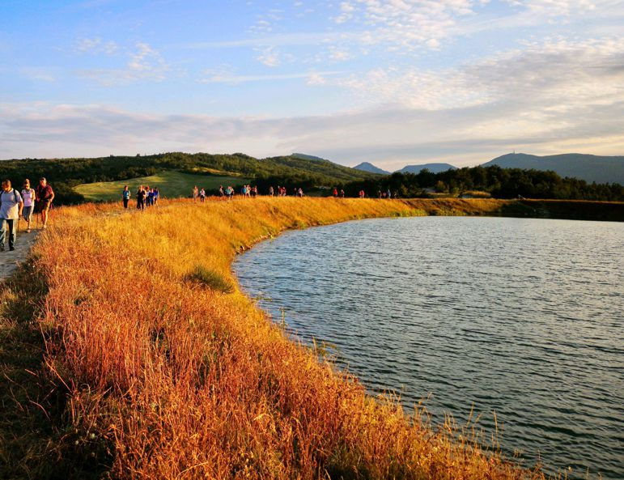
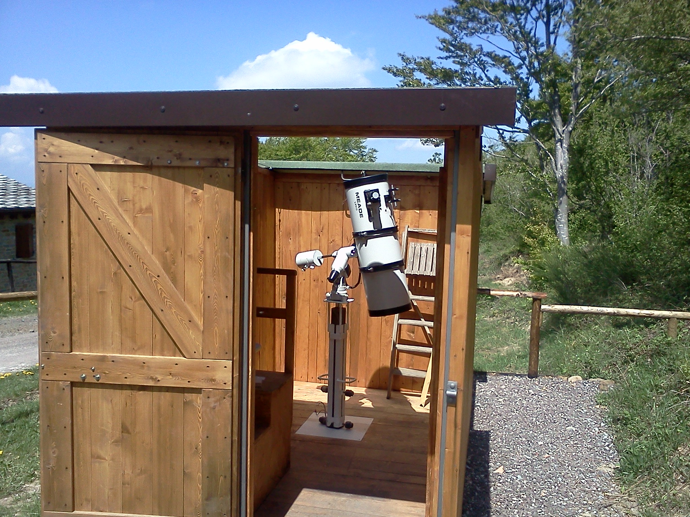
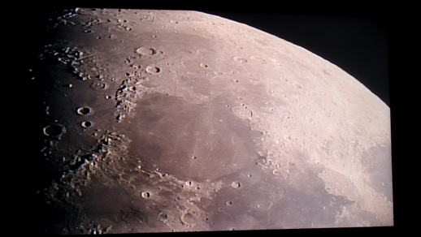

Camminate Le camminate organizzate da Oltr'Alpe si svolgono generalmente lungo sentieri di montagna del territorio del Comune di Monghidoro e dei Comuni limitrofi. Occasionalmente ci si sposta in altri Comuni o con mezzi propri o col pullman. In linea di massima chi partecipa alla camminata non conosce la destinazione in anticipo, conosce soltanto l'orario ed il luogo di ritrovo. Questo accade perché le destinazioni sono stabilite spesso all'ultimo momento, in funzione del clima (freddo, caldo, vento, pioggia) ed anche in funzione del numero e della tipologia dei partecipanti. La durata del giro può variare da 2-3 ore a inizio stagione fino a 5-6 ore nel periodo estivo quando i camminatori hanno già acquisito un certo allenamento. I percorsi non sono mai pianeggianti perché il territorio non lo consente. I dislivelli possono variare da 200-300 metri per i tracciati più semplici fino a 600-700 e oltre per i più impegnativi. I partecipanti devono essere quindi avvertiti che la camminata, come qualsiasi escursione in montagna, comporta sempre un minimo impegno e deve essere affrontata con consapevolezza. Utilizzare quindi un abbigliamento adeguato, tenendo conto che nel corso dell'escursione il tempo può cambiare. Le calzature dovranno essere idonee per camminare su terreno scosceso, con possibilità di incontrare fango o neve. L'uso dei bastoni per il Nordic Walking è sicuramente raccomandato. Per quanto riguarda gli alimenti, nelle escursioni da 2-3 ore che generalmente si concludono entro le 12,30-13,00 ciascun partecipante, se lo desidera, può portare il necessario per un breve spuntino che di solito si consuma durante una sosta a metà percorso. La camminata deve essere un piacere non un dispiacere: deve essere un momento riposante e rilassante da passare in compagnia, in piena amicizia e sereintà.
Partecipare alle camminate non costa niente: non è richiesta una quota di iscrizione all'evento, è però richiesta la tessera dell'associazione Oltr'Alpe, al costo annuale di € 10,00, per motivi assicurativi.
 Carte dei percorsi Serate astronomiche
Le serate di osservazione astronomica si svolgono il giovedì presso l'osservatorio Oltr'Alpe. Sono state scelte serate senza Luna per avere un cielo maggiormente scuro — in presenza della Luna non è possibile osservare oggetti deboli come le nebulose o le galassie. Naturalmente l'osservazione è condizionata dal tempo atmosferico: in presenza di cielo nuvoloso le serate saranno annullate senza ulteriori comunicazioni. Si raccomanda di vestirsi adeguatamente perché a oltre mille metri di quota, anche in piena estate, di notte può essere freddo.   Programma 2026 Giov. 09.07
sull'Alpe di Monghidoro — ore 21.30
SERATA ALL'OSSERVATORIO
Giov. 16.07
sull'Alpe di Monghidoro — ore 21.30
SERATA ALL'OSSERVATORIO
Giov. 06.08
sull'Alpe di Monghidoro — ore 21.30
SERATA ALL'OSSERVATORIO
Giov. 13.08
sull'Alpe di Monghidoro — ore 21.30
SERATA ALL'OSSERVATORIO
Giov. 20.08
sull'Alpe di Monghidoro — ore 21.30
SERATA ALL'OSSERVATORIO
Giov. 03.09
sull'Alpe di Monghidoro — ore 21.30
SERATA ALL'OSSERVATORIO
L'Organizzazione di Volontariato Oltr'Alpe non si assume alcuna responsabilità per quanto possa accadere ai partecipanti prima, durante e dopo la partecipazione alle iniziative.
|